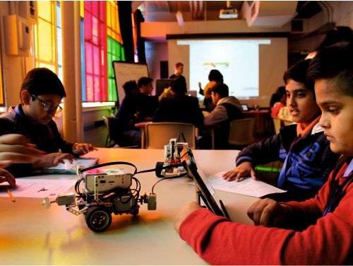
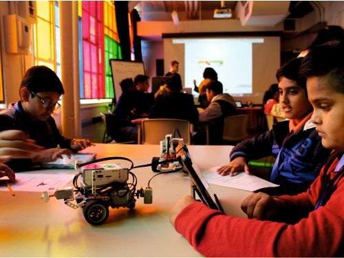

About School
Ryan International School Indore offers the students a variety of extracurricular activities with regular studies. Vocal and Instrumental music, Dance, Art and Craft and SUPW are integral parts of the education system in the school till Class VIII. After that the exceptional students are given extra-attention with extra classes. The school has managed to create and hone exceptional talent in all these fields. Children regularly have their works presented in national and international exhibitions
Student Life
Life at Ryan is about giving your child the best you have wanted as a parent. From a strong academic foundation to the development of your child's physical, spiritual and emotional personality, the Ryan way is about holistic development in its true sense. The Ryan way is defined as KASSM - Knowledge, Attitude, Skills, Social & Moral Values. Values with sound knowledge and the wisdom to use it constructively is what provides the differential factor to our students at Ryan. Ryanites are "Kings and Queens in the Making". Our 40 years of academic excellence is an open testimonial one can refer to. Ryan Group of Schools provide a learning environment that is adaptable and flexible, facilitating potential changes in the higher education pattern. This is done with an objective to support the new academic paradigm that provides learning for students in a manner most suited to them. We understand that second to home, the single biggest influence is the institution that you choose for your child's learning, making it all the more crucial for you to take this decision with great care.
School library:
Leadership Programs
Started in 2001, INMUN is a student run simulation of the United Nations initiated by the Ryan Group of Institutions. INMUN is also India's longest running Model United Nations Conference. INMUN provides students the opportunity to play the role of a diplomat, who represent various UN member nations, address specific issues of current interest through debate and negotiation, attempt to resolve regional and international problems. Over the past 17 years, 1000+ participants from over 90 schools across Asia Pacific embraced the spirit of UN charter and learnt the art of diplomacy, public-speaking, lobbying and crisis response. INMUN also witnessed participation by several National and World Leaders - Mr. Shashi Tharoor, MP- Lok Sabha, Madam Kiran Bedia - Social Activist, H.E. Nils Ragnar Kamsvag- Ambassador of Norway to India, H.E.. Mr. Riho Kruuv- Ambassador of Estonia to India and many more.
Experiential Learning
Our belief in experiential learning drives the experiential teaching-learning process at Ryan International Schools and Educational Exchange Programs helps students reinforce the concepts learnt in classrooms. Structured Student Exchange Programs such as listed below, involve students and teachers in a cross-disciplinary global learning environments. Students learn by experience what cannot be taught and benefit from synthesizing the viewpoints, ideologies, and frames of reference of diverse co-participants and mentors.
 
